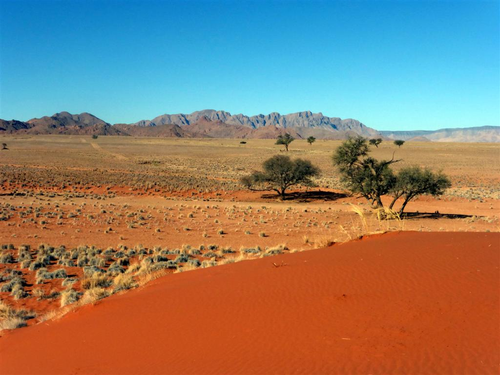

Soarele şi luna - versuri Balade Populare | Versuri.ro
- EGIPT: ?ara unde Soarele e frate cu de?ertul
EGIPT: ?ara unde Soarele e frate cu de?ertul. Luna de miere exoticã la Hurghada. Cei mai mul?i dintre români aleg sã-?i petreacã a?a zisa lunã de miere, care de cele mai multe ori se transfromã într-o sãptãmânã de concediu, cu harta în mânã. - Omul deşert | Viata ca un drog
Soarele şi luna …baladă populară culeasă de Gh. Dem. Teodorescu. Foaie de cicoare, În prunduţ de mare Iată că-mi răsare Puternicul Soare. Dar el nu-mi răsare, Ci va să se-nsoare; Că mi-a tot umblat Lumea-n lung şi-n lat, - Soarele | B.D.C
Soarele-mi vedea Şi îmărmurea, Şi se văieta, Năvodari chema, Năvod aducea Şi-n mare-l băga; Mulţi galbeni că da Să-i scoaţă dalba. Luptă ce-mi lupta În deşert erea, Că ei n-o găsea Şi n-o mai prindea; Făr' de... ce-mi scotea Şi-n năvod trăgea? O mreană de mare Cu solzii de zare. Pe mal d-o scotea, Pe mal d-o zvârlea, - Locul unde Soarele nu creează nicio umbră. Cum este ...
Virusologii au descoperit că razele ultraviolete (UV) pot distruge 90% dintr-o suprafață contaminată cu noul coronavirus, în aproximativ 30 minute, după ce o persoană infectată a strănutat sau a tușit acolo.. Studii separate au concluzionat că soarele poate distruge aproape în totalitate particulele de virus din aer în doar șase minute. - Soarele şi luna - Povesti Nemuritoare
Meditaţii în deşert care te pot bulversa psihic. În jurul meu nu este nici măcar o umbră. Nimic care să schimbe culoarea nisipului fierbinte. Aici, duşman îţi este soarele ce arde cu o intensitate incredibilă. Dușman îți este și vântul singuratic din deşert. El este compozitorul ce născoceşte muzica turbată. - Soarele poate distruge coronavirusul în 30 de minute ...
Oraşul e acum deşert sărăcăcios Iar soarele dispare ros de vină. În dansul şui al torţei dezlânate, Întreg Egiptul se animă în pereţi. Sub mâini de sclavi cad spicele înalte În cântul-rugă îngânat de cântăreţi Şi ziduri grele se despincă-n văl de fum Stânci risipite din nisipuri se adună, Se rânduiesc palate ... - „Soarele” – Tarta apetisantă din brânză de vaci şi ...
Download-uri Poze : om, natură, pădure, siluetă, Munte, deşert, umbră, întuneric, negru, artă, american, fundal, Curcan, hd, cowboy turci 2448x2448,1069612 - Soarele în citate, maxime, aforisme - diane.ro
Soarele şi luna A mai mitică, Ca o floricică, În mijloc şedea, La lucru lucra, Pe toate-ntrecea; Că ea tot ţesea. Ţesea, -nchindisea, Şi ea se numea Ileana Simzeana, Doamna florilor Ş-a garoafelor, Sora Soarelui, Spuma laptelui. Soare răsărea, Şi Soare-mi venea La gură d-argea. Cu dânsa vorbea, Frumos c-o-ntreba, Din gură-i zicea: - Soarele şi luna - versuri Balade Populare | Versuri.ro
Vector imagine de soarele străluceşte peste munte stânci. ... Soare în deşert. Vectorii sponsorizate . Descarcă . Descriere . Vector imagine de soarele străluceşte peste munte stânci. Categorii. Fundaluri. Licență . Politica de confiden?ialitate . Specificații. 0.58 MB. 2018-06-19 . - Reteta Desert cu bostan "Soarele" - Bucataras.RO
3. Se racesc . Intre timp se curata de coarja portocala in forma de spirala cu un cutit ingust si foarte bine ascutit. Coaja taiata de portocala se inroleaza in forma de floare si se prinde cu o scobitoare.

Soarele şi luna - versuri Balade Populare | Versuri.ro
Versuri B BA Balade Populare Soarele şi luna
Versuri Balade Populare - Soarele şi luna
trimise de David .Foaie de cicoare,
În prunduţ de mare
Iată că-mi răsare
Puternicul soare.
Dar el nu-mi răsare,
Ci va să se-nsoare;
Că mi-a tot umblat
Lumea-n lung şi-n lat,
Ţara Românească
Şi Moldovenească
Lungiş,
Curmeziş,
Măre, nouă ai,
Tot pe nouă cai;
Patru-a ciumpăvit,
Cinci a omorât
Şi tot n-a găsit
Potrivă să-i fie
Vro dalbă soţie;
Făr' de mi-a găsit
Şi mi-a nemerit,
La nouă argele,
Nouă feciorele,
În prunduţ de mare,
Pe unde răsare.
Soarele şi luna
A mai mitică,
Ca o floricică,
În mijloc şedea,
La lucru lucra,
Pe toate-ntrecea;
Că ea tot ţesea.
Ţesea, -nchindisea,
Şi ea se numea
Ileana
Simzeana,
Doamna florilor
Ş-a garoafelor,
Sora Soarelui,
Spuma laptelui.
Soare răsărea,
Şi Soare-mi venea
La gură d-argea.
Cu dânsa vorbea,
Frumos c-o-ntreba,
Din gură-i zicea:
- Ileană, Ileană,
Ileană Simzeană,
Doamna florilor
Ş-a garoafelor,
Sora Soarelui,
Spuma laptelui,
Ţeşi şi-nchindiseşti,
Fir verde-mpleteşti
Şi mi te zoreşti
Cămăşi să-mi găteşti,
Şi mi te grăbeşti
Să te logodeşti;
Că io mi-am umblat
Lumea-n lung şi-n lat,
Ţara Românească
Şi Moldovenească
Lungiş,
Curmeziş,
Măre, nouă ai,
Tot pe nouă cai;
Patru-am ciumpăvit,
Cinci am omorât
Şi nu mi-am găsit
Potrivă prin lume
Afară de tine.
Ileana
Simzeana,
Doamna florilor
Ş-a garoafelor,
Sora Soarelui,
Spuma laptelui,
Ea, dac-auzea,
Din gură-i grăia:
- Puternice soare,
Eşti puternic mare,
Dar ia spune-mi: Oare
Und-s-a mai văzut
Şi s-a cunoscut,
Und' s-a auzit
Şi s-a pomenit
Să ia sor' pe frate
Şi frate pe sor'?
De mi-ei arăta,
Atunci te-oi lua,
Atunci, nici atunci!
Unde-o auzea,
Soarele-mi ofta
Şi iar o-ntreba,
Şi iar o ruga,
Şi iar o-mbiia,
Pân' ce Ileana
Din gură-i grăia:
- Io că te-oi lua,
Cum zici dumneata,
Viteaz dacă-i fi
Şi te-i bizui
De mi-ei isprăvi:
Pod pe Marea Neagră,
De fier
Şi oţel,
Iar la cap de pod,
Cam d-o mânăstite,
Chip de pomenire,
Chip de cununie,
Să-mi placă şi mie,
C-o scară de fier
Pân' la naltul cer!
Puternicul Soare,
Ca puternic mare,
Unde-o auzea,
Bine că-i părea.
În palme-mi bătea
Şi pod se făcea;
La cap - mânăstire,
Chip de pomenire;
Şi iar mai bătea,
Scară se-ntindea,
O scară
Uşoară,
De fier
Şi oţel,
Pân' la naltul cer.
Dar el ce-mi făcea?
Pe pod că-mi trecea,
Pe scară suia,
Pe scară
Uşoară,
Pe scară de fier,
În cuie d-oţel,
Pân' la naltul cer.
Şi, de-mi ajungea,
Unde se ducea?
Tot la moş Adam
Şi la maica Iova.
Ei, de mi-l vedeau,
Nainte-i ieşeau;
Din gură-i grăiau;
- O, preasfinte Soare,
Puternice mare,
Ce-mi călătoreşti,
De ne ispiteşti?
La ce te gândeşti
Şi la ce pofteşti?
Şi el răspundea,
Din gură zicea:
- Iaca, moş Adam,
Şi cu maică Iovo,
Mie mi-a venit
Vremea de-nsoţit,
Şi eu c-am umblat
Lumea-n lung şi-n lat,
Ţara Românească
Şi Moldovenească
Lungiş,
Curmeziş,
Şi tot n-am găsit
Potrivă să-mi fie
Vro dalbă soţie;
Făr' de mi-am găsit
La gură d-argea
Numai pe sor-mea,
Sor-mea Ileana,
Ileana Simzeana,
Doamna florilor
Ş-a garoafelor!
Atunci moş Adam
Şi cu moaşa Iova,
Unde-l auzea,
Rău că le părea,
Soarelui zicea:
- Preasfinţite Soare,
Puternice mare,
Unde-ai auzit
Ş-ai mai pomenit,
Unde-ai cunoscut,
Unde-ai mai văzut
Să ia sor' pe frate
Şi frate pe sor',
Că cin' n-o lua
Raiul c-o d-avea,
Iar cine-o lua
În iad c-o intra.
Soar'le se uita,
Din ochi căuta,
Nimic nu grăia;
Iar moşul Adam
Şi cu moaşa Iova
De mână-l luau,
La rai mi-l duceau,
Rai că-i arătau,
Şi de ce vedea,
Bine că-i părea:
Numai mese-ntinse,
Cu făclii aprinse,
Cu pahare pline,
În cântece line;
Jur-prejur de mese
Stau în cete dese
Sfinţi şi mucenici,
Mai mari şi mai mici,
O sută şi cinci;
Iar mai jos de ei,
Sfinţi mai mărunţei,
O sută şi trei.
Şi tot mai erea,
Şi tot mai vedea:
Femei cuvioase,
Măicuţe duioase,
Fecioare curate,
Ucişi în dreptate,
Oşti de biruinţă
Şi soţi cu credinţă.
Dar tot mai erea
Şi tot mai vedea,
Puţin de mergea;
Printre rămurele,
Dalbe păsărele
Cânta-n versurele,
Şi nu prea cânta,
Ci se gongănea,
Din gură-mi zicea:
Ferice, ferice,
Ferice de noi,
De părinţii noştri
Care ne-au făcut,
Care ne-au născut
Şi ne-au botezat
Şi ne-au creştinat,
Că dac-or trăi,
Săraci n-or mai fi!
De tot ce vedea
Bine că-i părea
Şi se mulţumea.
Afar' de-mi ieşea,
Iarăşi moş Adam
Şi cu moaşa Iova
Chieile lua,
La iad îl ducea,
Iadul descuia,
În iad îl băga
Şi de ce-mi vedea
Păr i se zbârlea:
Că-n focuri ardea,
Greu se văieta
Hoţi şi călcători,
Răi cârmuitori,
Şi nurori pizmaşe,
Şi soacre trufaşe,
Fii necuvincioşi,
Preoţi mincinoşi.
Afar' când ieşea,
Soar'le ce-mi vedea?
Un pom ofilit,
Un pom cătrănit;
Printre rămurele,
Nişte păsărele
Cânta-n versurele,
Dar nu prea cânta,
Ci se văieta,
Din gură grăia:
Vai şi vai de noi,
De părinţii noştri
Care ne-au făcut,
Care ne-au născut,
Că ei ne-au lăsat,
Nu ne-au botezat,
Nu ne-au creştinat,
Şi d-or mai trăi,
Tot săraci c-or fi,
Greu s-or pedepsi!
De tot se vedea
Mult rău că-i părea,
Nu se mulţămea.
Foaie, foicea,
Soar' le ce-mi făcea?
De câte vedea
Nu se-ndupleca,
Ci, măre, -mi pleca,
Ci, măre, -mi zbura
La gură d-argea,
Tot la soră-sea,
Şi iar o-ntreba,
Şi iar o ruga,
Şi iar o-mbiia
Pe dânsa s-o ia.
Ileana
Simzeana,
Doamna florilor
Ş-a garoafelor,
Sora Soarelui,
Spuma laptelui,
Daca-l auzea
Şi daca-mi vedea
Că tot nu scăpa,
Ea tot mai cerca,
Din gură-i zicea:
- Frate, frăţioare,
Puternice Soare,
Spune mie: Oare
Cine-a cunoscut,
Cine-a mai văzut,
Cine-a auzit,
Cine-a pomenit
Să ia sor' pe frate
Şi frate pe sor'?
Dar io te-oi lua
Viteaz dacă-i fi
Şi te-i bizui
Până-n zori de zi
Mie să-mi croieşti
Şi să-mi isprăveşti
Peste Marea Neagră
Un pod de aramă,
Să nu-l bagi în seamă,
Iar la cap de pod,
Cam d-o mânăstire,
Chip de pomenire,
Chip de cununie,
Să-mi placă şi mie.
Puternicul Soare,
Ca puternic mare,
Unde-o auzea,
Bine că-i părea
'N palme că-mi bătea,
Podul se-ntindea,
Un pod de aramă,
De nu-l bagi în seamă,
Şi d-o mânăstire,
Chip de pomenire.
Când le isprăvea,
La ea se ducea,
De mân-o lua,
La pod c-o ducea,
La pod c-ajungea,
La pod de aramă,
De nu-l bagi în seamă,
Şi, pod când trecea,
Pod că zornăia,
Pod se cletina,
Că n-a mai văzut,
Nici n-a cunoscut,
Că n-a auzit,
Nici n-a pomenit
Să ia sor' pe frate
Şi frate pe sor'.
Floare, ş-o lalea,
Podul când trecea,
Pe pod când mergea
Către mânăstire
Pentru pomenire
Şi la cununie
Să-i fie soţie,
Ileana
Simzeana,
Doamna florilor
Ş-a garoafelor,
Sora Soarelui,
Spuma laptelui,
Din gură-i zicea
Ş-astfel grăia:
- Frate, frăţioare,
Puternice Soare,
Ia mai spune-mi: Oare
Und' s-a mai văzut
Şi s-a cunoscut,
Und' s-a auzit
Şi s-a pomenit
Mirele d-a dreapta,
Mireasa-nainte?
Ci mi-a fost ş-o fi
Şi s-o pomeni
Mirele-nainte,
Mireasa d-a stânga!
Puternicul Soare,
Puternic şi mare,
De mân-o lăsa,
Nainte-i trecea,
Iar ea, vai de ea,
Aşea de-mi vedea,
Cruce că-şi făcea,
În mare sărea
Şi mi se-neca.
Domnul se-ndura,
Mreană c-o făcea.
Soarele-mi vedea
Şi îmărmurea,
Şi se văieta,
Năvodari chema,
Năvod aducea
Şi-n mare-l băga;
Mulţi galbeni că da
Să-i scoaţă dalba.
Luptă ce-mi lupta
În deşert erea,
Că ei n-o găsea
Şi n-o mai prindea;
Făr' de... ce-mi scotea
Şi-n năvod trăgea?
O mreană de mare
Cu solzii de zare.
Pe mal d-o scotea,
Pe mal d-o zvârlea,
Sfinţi din cer vedea,
Jos se scobora,
'N palme c-o lua
Şi mi-o curăţa,
Şi mi-o tot freca,
Solzii de-i cădea,
Şi-n cer mi-o zvârlea.
Colo, moş Adam
Şi cu maica Iova,
Unde mi-o vedea,
Ei, măre, că-mi sta
De mi-o sclivisea,
Nume că-i dedea,
Lună mi-o chema.
Iar ea, vai de ea,
Măre, -ngenunchea,
Lacrămi că vărsa,
Pe Domnul ruga.
Domn c-o auzea,
Domn c-o asculta,
Din gură-mi grăia
Şi mi-i osândea:
Lumea cât o fi
Şi s-o pomeni,
Nu vă-ţi întâlni
Nici noapte, nici zi;
Soare când o sta
Către răsărit,
Luna s-o vedea
Tot către sfârşit;
Luna d-o luci
Către răsărit,
Soarele mi-o fi
Tot către sfinţit!
Şi d-atunci se trase,
Şi d-atunci rămase,
Lumea cât o fi
Şi s-o pomeni,
Că ei se gonesc
Şi nu se-ntâlnesc:
Lună când luceşte,
Soarele sfinţeşte;
Soare când răsare,
Luna intră-n mare.
Tipărire lyrics Corectează lyrics
Alte versuri Balade Populare : Mioriţa - versuri Balade Populare Toma Alimoş - versuri Balade Populare Balada lui Constantin Brâncoveanu - versuri Balade Populare Pintea Viteazu - versuri Balade Populare Novac şi corbu - versuri Balade Populare
Traducere automată
Autentificare Autentificare
Versiunea mobilă | RSS | Arhivă stiri | Arhivă cereri | Parteneri media | Resurse | Condiții de utilizare | Politica de confidentialitate | Contact
Prima pagină | Ştiri | Evenimente | Cere versuri | Trimite versuri noi # a b c d e f g h i j k l m n o p q r s t u v w x y z
